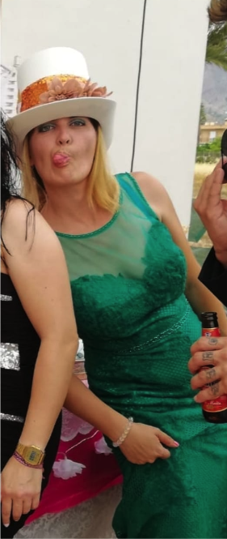
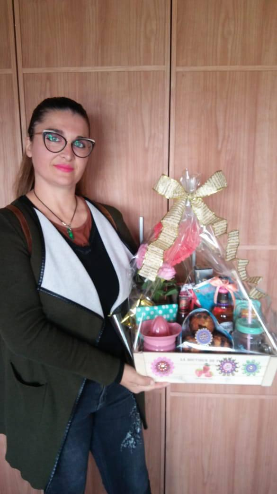

MI HISTORIA

Soy Carol, creadora de experiencias visuales con mesas dulces únicas. Cada diseño nace de la pasión por el color, el detalle y la alegría de transformar un momento en algo mágico. Mi trabajo combina creatividad artesanal y una atención personalizada para que tu celebración tenga un estilo inigualable. En cada evento busco contar una historia; desde la primera idea hasta la mesa lista, mi objetivo es hacer de tu celebración un recuerdo dulce y perfecto.
Soy La Magia de Carol ✨🙏✨🍭🧁🪄🪄
Me encanta esta Foto...
Cuando era pequeña siempre preparaba mís Cumpleaños con todo al detalle.
Las invitaciones, la decoración, los juegos, los bailes y sus canciones...un tiempo me dio por tarta de manzana aún que la mayoría prefiriese de Chocolate jajjaja
Lo preparaba con mucha ilusión y una imaginación desbordante, tanto, que los demás no me entendían jajjaja y acababa muchas veces incluso cabreada porque no hacían caso a todo lo que yo había preparado con tanto empeño,
quizá por eso hoy siempre intento transmitir en Mis Mesitas Dulces lo máximo en el detalle para llegar a crear esa Magia y esa Ilusión que quiero que las personas sientan y puedan llegar a soñar.
Esto es mucho más que Una Mesa dulce para Mi, yo quiero expresar un sentimiento, transmitir Emociones aún que no llegue a todos de la misma forma....
pero bueno también he comprendido que no todo el mundo siente esa curiosidad o sensibilidad aún que siempre me agradecen y les gusta mi trabajo, yo lo hago con respeto y cariño.
Desde pequeñita siempre me dio por buscar lo raro, extravagante, diferente, divertido, colorido lo adelantado a mi tiempo, incluso inventaba cosas (Soy Acuario ♒)
Estudié Graduado en Artes y oficios, siempre he creado, he hecho cosas con las manos y me gusta mucho lo único y personal que describa a cada uno,
que cada uno tenga y refleje su propia personalidad en todos los aspectos de su vida y no lo esconda.
Bueno, cuando era muy pequeña me dio por ir de color de rosa solo y mi madre loca porque yo quería solo rosa, y bueno así, muchas cosas...
Cada cambio de estación me daba por cambiar la decoración de mi habitación o de la casa... he iba al todo a 100 pesetas de mi pueblo con la paga que me daba mi madre
y compraba algun objeto o decoración que reflejase lo que yo quería decorar...
Cada cambio de estación nos vestimos y mostramos diferentes, yo siento esa sensibilidad y sensación a cada cambio de estación y me gusta cambiar según lo que siento
y ese sentimiento me da una sensación diferente a la que yo me adapto como un camaleón.
